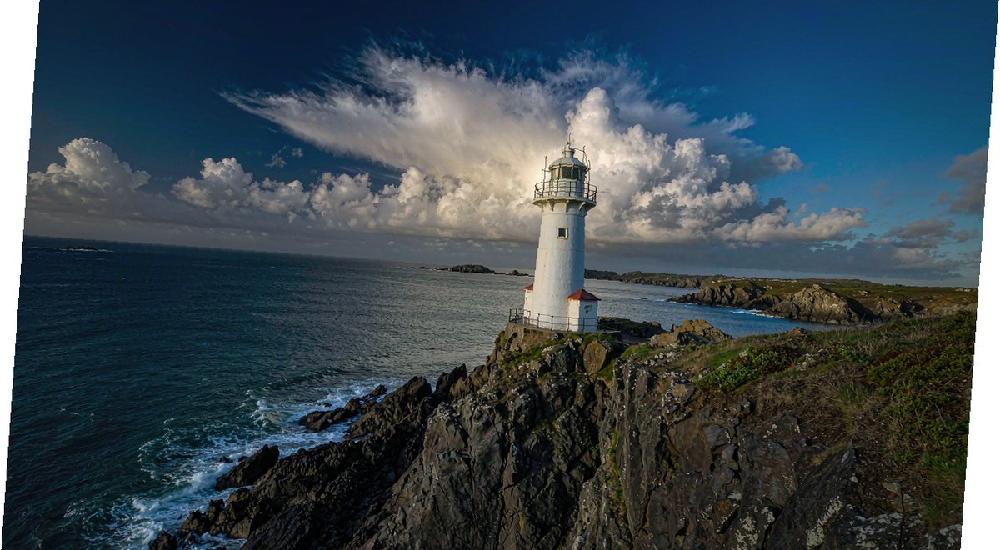
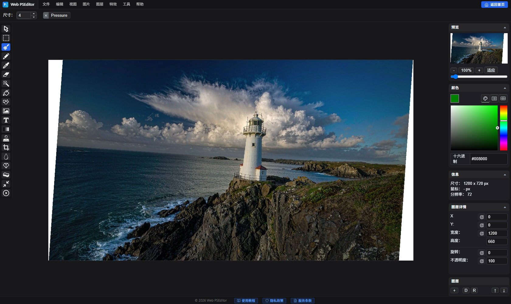

裁剪、旋转与矫正歪斜照片
地平线差 2 度，整张照片就像要往一边倒。多数人删掉重拍，其实三个动作就能救回来：先把大的方向转正，再把小的角度调平，最后裁掉空出来的白角。顺序错了，画质白掉一半。
为什么差 2 度就觉得歪
眼睛量的不是角度，是参照。水面、墙线、桌沿、楼顶——凡是大脑认定「应该水平」的东西，都会变成基准线，其它线全对着它比。所以海景歪 2 度难受得要命，而一张侧身倚靠的人像歪 2 度根本看不出来：前者有参照，后者没有。
手机让这件事更容易发生。举起手拍的时候身体本来就微微侧倾，而相机记录的只是「哪边朝上」——一个方向标签，用来把照片转正，并不是对你那点倾斜的校正。结果是取景屏上看着没问题，一放到显示器上就歪。手持拍摄常见偏差在 1 到 5 度之间，超过 5 度通常是按快门时人还在转。

旋转救不了的那种歪：会聚垂直线
还有一种问题，转多少度都没用。仰拍把整栋楼塞进画面时，两侧的竖线会向顶部收拢——每一根收的幅度还不一样，顶上收得多，基座几乎不收。这不是角度问题，是透视。旋转只能让水平线变平，竖线要正过来必须做透视（梯形）校正，而这个编辑器不提供。
遇到同时有两种歪的照片，处理顺序是：先把水平线救正，接受剩下的竖线倾斜，然后往楼基方向裁紧——那里会聚最轻，裁掉顶部就能弱化倒伏感。想彻底解决只能换拍摄位置，退到远处用长焦，或者把相机举到建筑中段的高度。
三个动作，顺序不能错
「旋转」在口语里指三件不同的事，混着用就会得到一张又软又紧的图：
- 直角旋转——正好 90、180、270 度。用在照片躺着或倒着的时候。它只是搬动像素行，不做插值，画质零损失。
- 角度校正——中间任意值，通常 1 到 6 度。这才是修倾斜地平线的工具。它会把整张图重采样一次，一次没问题，反复确认十次就废了。
- 裁剪——切掉角度校正挤出来的白角，顺手把构图定下来。永远放最后。
由此得出一条规则：先修粗的错，再修细的错，最后定画框。已经调过角度、裁过图，再回头做 90 度旋转，等于把整张图白白重算一遍。
打开照片，点 【图片】→【旋转】。对话框里只有两个控件：角度滑杆（0–360°）管任意倾斜，直角下拉（自定义 / 0 / 90 / 180 / 270）管整倍旋转。直角下拉必须留在「自定义」，否则它会把滑杆的数字直接替换成 90 的倍数，怎么拖都是歪的直角。本例约 4 度，拖滑杆即可。确认之后画布会扩大以容纳旋转后的图层——白角就是这么来的。

选裁剪工具，沿画面内容把四个角收进去，顺带把画面边缘的杂物切掉。注意这个裁剪工具没有比例预设，只能自由拖；按住 Ctrl（Mac 为 Cmd）锁定的是原图比例，想让主体落在三分线上，靠眼睛对。收到什么程度算够：放大到 100% 逐个角看，任何一角露出一像素白边，全尺寸下都像失误。
放大看建筑轮廓或地平线。差 1 度看不出来，差 3 度整张都歪，所以以 0.5 度为步长微调。判断依据用画布边框，不要用画面里的另一条线——那条线本身可能也是歪的。看四角比看中间准，中间的小偏差最难察觉。需要硬参照就打开 【视图】→【标尺】。
走 【文件】→【导出】。翻拍的文档、扫描件用 JPG 质量 90 以上，文字更利；还要再编辑或要印刷的用 PNG，避免第二道压缩。
裁掉、放大、还是补上：白角怎么处理
确认角度校正后画布会扩大，照片本身面积不变，四边因此出现三角形空隙。怎么处理决定最终分辨率：
- 裁掉。 标准答案。每条边损失约 1 度 2%、5 度 10%，画面本身不动。绝大多数照片都该这么办。
- 放大再裁。 保住原构图，但会二次重采样，整体变软。只在构图很紧、一点边都舍不得时才值。
- 补上。 白角落在天空、沙滩、白墙上时，用克隆或画笔取邻近纹理盖掉。背景能糊过去，图案面立刻露馅，人脸和建筑直线上绝对不能用。
不管走哪条，导出前都要在 100% 下把四角看一遍。矫歪照片最常见的瑕疵，就是某个角上残留一条原始白边，而适应窗口缩放下完全看不见。
转正之后，重排一次构图
旋转改变了画框落点，也就改变了构图。两件事值得在导出前做：重放主体——旋转前压在中线上的地平线，现在可能偏高或偏低，挪一下裁切框，让它落在三分线上，照片就从「被修正过」变成「本来就这样」；扫一遍边缘——旋转会把画框外的新内容拉进来，一个路牌、别人的肩膀、一块过曝的天空，正是这些让救回来的照片看上去像救回来的。裁到每条边要么干净、要么明显是有意为之。
常见问题 FAQ
不知道具体歪了多少度，能校正吗？
能，而且猜一个数字才是错的做法。找一个本该水平的边——地平线、门框、桌面、楼顶——拖角度滑杆，直到这条边与画布边框平行即可。想要硬参照线就打开【视图】→【标尺】。
校正角度会损失画质吗？
任何不是 90 度整数倍的旋转都会把每个像素重采样一次，之后的裁剪再带走空出来的角。单次 2 到 5 度的校正肉眼看不出损失。真正伤画质的是反复拖动滑杆、每拖一次就确认一次——每次确认都焊进一轮重采样。在 100% 缩放下把角度定好，再确认一次。
应该先裁剪还是先旋转？
先旋转，再裁剪。先裁会先丢掉后面可能还用得上的像素，而且旋转产生的白角还得再裁一次，等于裁两遍。一次旋转、一次裁剪，就这个顺序。
相关教程推荐
打开一张你自己的歪照片，按「大旋转 → 小角度 → 裁剪」走一遍，再对比原图。